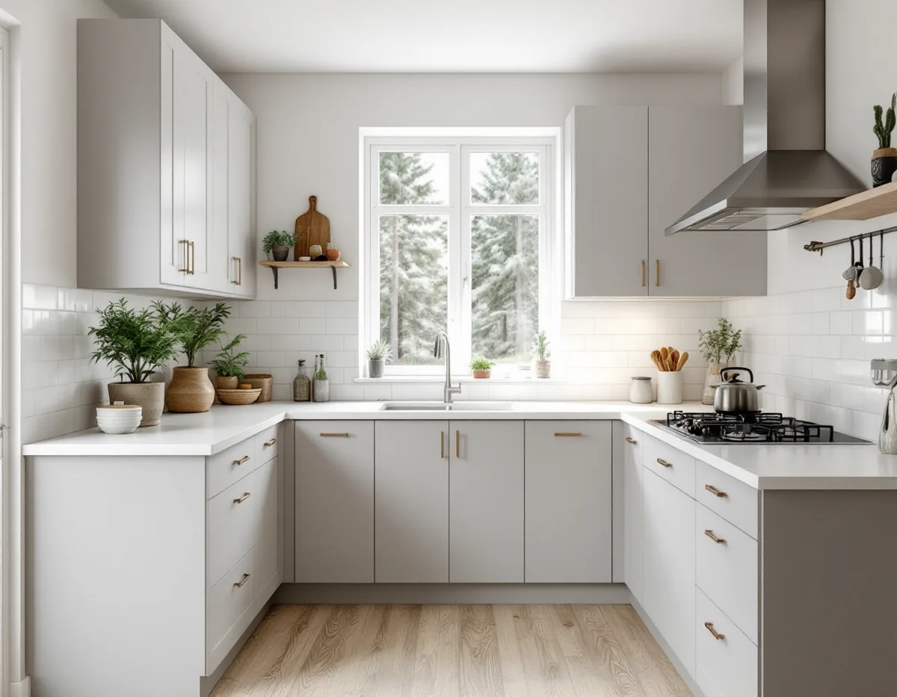
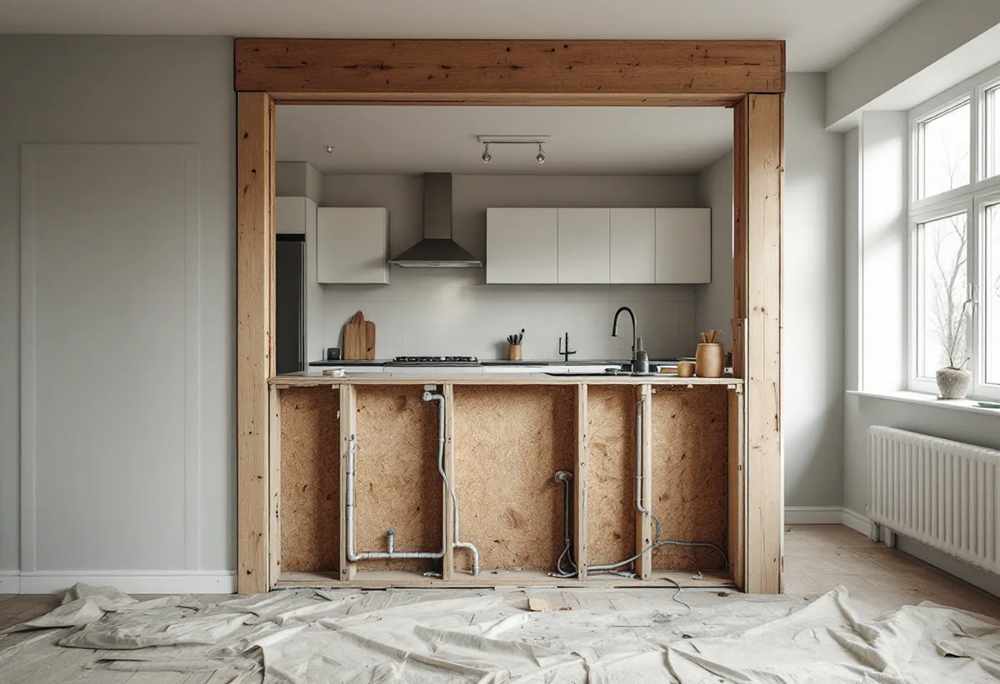

Platsbesök
Vi mäter köket, ser var frånluft, stam och el går och tittar på väggen mot vardagsrummet.
I Huddinge kan nästa kök sitta i ett egnahem från 1920-talet, i ett grupphus i Skogås eller i en sportstuga som blivit helårsbostad. Husets ålder avgör hur ventilationen fungerar, var avloppet går och vilka väggar som bär. Vi börjar med ett gratis platsbesök, samordnar snickeri, el och VVS och drar ROT-avdraget direkt på fakturan.

Enligt Huddinges kulturmiljöprogram började Stuvsta egnahemsområde och Hörningsnäs villastad byggas i början av 1900-talet, och på 1920-talet blev Segeltorp och Snättringe villatomter. Köken i de husen har ofta bytts flera gånger, och bakom den senaste inredningen kan det finnas allt från ett gammalt skafferi till en igensatt rökkanal.
Under rekordåren och fram till början av 1980-talet tillkom grupphusområden som Sörskogen, Utsälje och Östra Skogås. Där byggdes många hus med samma planlösning, och köket ligger därför ofta på samma ställe i varje hus i längan, med samma mått på stommen och samma dragning av rör.
Vid Mellansjö och Trehörningen byggdes sportstugor på 1910–30-talet, och vid Gömmaren växte ett sportstugeområde fram. Många av stugorna har permanentats och byggts till. Där kan köket ha flyttat med varje tillbyggnad, och det är först när golv och väggar öppnas som det syns hur ledningarna verkligen går.

Huddinge kommun beskriver på sidan om ventilation och OVK vilka ändringar som kräver anmälan och startbesked. Att byta fläkt, fläktmotor eller filter räknas normalt som underhåll, liksom att byta don och ventiler mot likvärdiga. Även bytet från självdrag till fläktstyrd frånluft i ett en- eller tvåbostadshus kan enligt kommunen göras utan anmälan.
Anmälan krävs däremot när ett aggregat, en fläkt eller nya kanaler påverkar flödena eller luftkvaliteten, eller när ventilationen anpassas till en ny planlösning. Det blir aktuellt när köket öppnas mot vardagsrummet och den gamla frånluften inte längre räcker för den större ytan.
Dras kanalen eller sätts ett aggregat på utsidan av huset kan det enligt kommunen vara en ändring av det yttre som kräver bygglov. Ska en ny kanal ut genom taket samordnar vi genomföringen med taket, se takläggare i Huddinge.
Flyttas diskbänken bara några decimeter längs samma vägg räcker det oftast att förlänga anslutningen. Ska den till en köksö eller till andra sidan rummet blir det en ny avloppsdragning. Kommunen skriver att den som installerar eller väsentligt ändrar vatten och avlopp behöver göra en anmälan, och att ett utlåtande från konstruktör krävs om hål tas upp i bärande delar.
Har fastigheten kommunalt vatten och avlopp ansvarar byggherren för att kontakta Stockholm Vatten och Avfall om anslutningen ändras. Har fastigheten inte kommunalt avlopp ska du även kontakta kommunens miljötillsyn. Mer om den frågan finns under badrumsrenovering i Huddinge.
Att ta upp en öppning i en bärande vägg kräver enligt kommunens sida om bärande konstruktion anmälan och startbesked, och kommunen påpekar att ritningarna i bygglovsarkivet inte säkert stämmer med det som byggdes. Därför bedömer en konstruktör väggen på plats innan något rivs.
Ett grupphuskök är sällan stort, och önskan är ofta att öppna det mot vardagsrummet eller flytta diskbänken till en ny plats. Om väggen mellan rummen är en lätt mellanvägg eller bär bjälklaget går inte att se på ytan, så det får konstruktören avgöra innan planen låses.
Eftersom längorna är byggda lika går det ofta att använda grannens erfarenhet, till exempel om hur frånluften är dragen eller var stammen går. Det ersätter inte en egen bedömning, men gör planeringen snabbare. Golvet under de gamla skåpen saknar ibland ytskikt, och då behöver det läggas nytt där inredningen flyttas, se golvläggare i Huddinge.
Många väljer att göra om hela bottenvåningen samtidigt. Då är det klokt att måla tak och väggar innan den nya inredningen kommer på plats – målare i Huddinge.
Vi mäter köket, ser var frånluft, stam och el går och tittar på väggen mot vardagsrummet.
Arkivritningar tas fram, och ska en vägg bort bedömer en konstruktör den på plats.
Rivning, installationer, snickeri och montering redovisas var för sig, med anmälan om den behövs.
Gamla skåp tas bort, och avlopp, vatten, el och fläkt dras enligt den nya planen.
Golv och väggar blir klara, stommen monteras och bänkskivan mäts in.
Vitvaror och belysning ansluts och provas, och vi går igenom köket tillsammans.
Skatteverket godkänner rotavdrag i småhus för att montera fast köksinredning och installera vitvaror när det sker i samband med en omfattande renovering. Även att riva väggar och bygga om planlösningen, sätta kakel, modernisera elen och installera avlopp och ventilation räknas som rotarbete. Avdraget är 30 procent av arbetskostnaden, högst 50 000 kr per person och år, och 75 000 kr sammanlagt med rut.
Skåp, bänkskiva och vitvaror är material och ger inget avdrag. Vi skriver arbete och material var för sig och drar avdraget på fakturan.
Mest avgör om diskbänk och spis kan stå kvar där avlopp och frånluft redan finns. En vägg som ska öppnas, ny avloppsdragning till en köksö eller ny ventilation lägger till arbete och ibland en anmälan. Efter ett gratis besök får du ett skriftligt kostnadsförslag.
Planering, el, VVS, fläkt och väggar.
Köksrenovering i Stockholm →Takbyte, takbesiktning och plåtarbeten.
Takläggare i Huddinge →Stuvsta, Snättringe och Skogås.
Takrenovering i Huddinge →Grannar, tomtgräns och lovärendet.
Byggföretag i Huddinge →Nytt trä i en gammal fasad.
Fasadmålning i Huddinge →Egnahem, grupphus och 70-talsvillor.
Fönsterbyte i Huddinge →Okopplade bågar, tätning och lagning av bottenstycken.
Fönsterrenovering i Huddinge →Slipa golvet och byt ytbehandling.
Golvslipning i Huddinge →Egnahem, grupphus och permanentade stugor.
Badrumsrenovering i Huddinge →Villor, grupphus och fritidshus i Huddinge.
Fasadrenovering i Huddinge →Grupphus, radhus och kedjehus i Huddinge.
Golvläggare i Huddinge →Fasad, fönster och rum i Huddinge.
Målare i Huddinge →Rännor, dagvatten och brutna tak.
Plåtslagare i Huddinge →Altaner, förråd och gäststugor.
Snickare i Huddinge →Tyngre tak, stugor och landsbygd.
Takbyte i Huddinge →Råd för tre epoker av småhus.
Tillbyggnad i Huddinge →